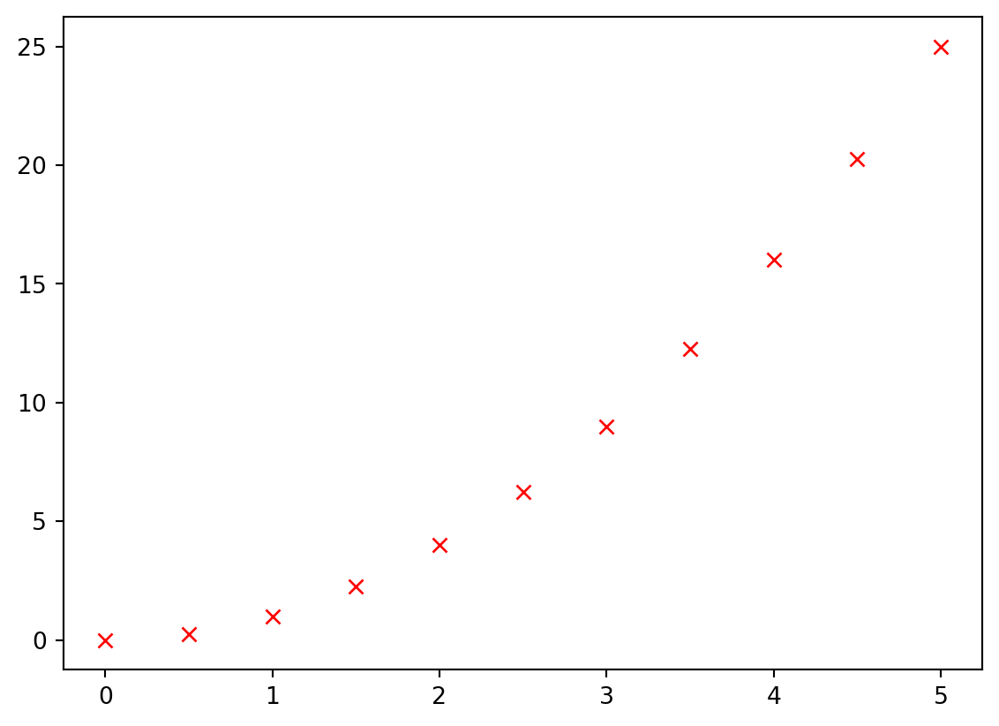

import numpy as np
import matplotlib.pyplot as pltVisualización de Datos con Matplotlib y Seaborn
Visualización de Datos con Matplotlib y Seaborn
Pyplot básico (2/13)
x = np.linspace(0,5,11)
y = x**2plt.plot(x,y)
plt.show()# Roja con X
plt.plot(x,y, 'rx')
plt.show()
# Roja con cuadros y con una linea
plt.plot(x,y, 'rs-')
plt.show()# Amarillo con diamantas y con una consecucion de puntos
plt.plot(x,y, 'yD:')
plt.show()# Un histograma
plt.hist(x)
plt.show()
# Un grafico de Pie
plt.pie(x)
plt.show()# Un scatter plot
plt.scatter(x,y)
plt.show()# Un boxplot
plt.boxplot(x)
plt.show()Subplot (3/13)
import numpy as np
import matplotlib.pyplot as pltx = np.linspace(0,5,11)
y = x**2# 1 fila y 2 columnas
plt.subplot(1,2,1)
plt.plot(x,y,'r--')
plt.subplot(1,2,2)
plt.hist(y)
plt.show()plt.subplot(1,2,1)
plt.plot(x,y,'r--')
plt.plot(y,x,'b:')
plt.subplot(1,2,2)
plt.pie(y)
plt.show()plt.subplot(2,1,1)
plt.plot(x,y,'r--')
plt.plot(y,x,'b:')
plt.subplot(2,1,2)
plt.pie(y)
plt.show()Subplots (4/13)
import matplotlib.pyplot as plt
import numpy as np
x = np.linspace(0,5,11)
y = x**2fig, axes = plt.subplots()
axes.plot(x,y)
plt.show()
# Varias gráficas tipo fig
fig, axes = plt.subplots(nrows=1, ncols=2)
axes[0].plot(x,y,'b')
axes[1].plot(y,x,'r')
plt.show()
# Acceder a los gráficos mediante el nombre
fig, (axes1, axes2) = plt.subplots(nrows=1, ncols=2)
axes1.plot(x,y,'b')
axes2.plot(y,x,'r')
plt.show()# Generar una matriz de tipo fig
fig, axes = plt.subplots(2,4)
#genera un trazo accediendo a las graficas a traves del indice de la matriz
axes[0,0].plot(x,y)
axes[0,1].plot(y,x, 'r')
fig.tight_layout() #mejora la visualización de los ejes de cada gráfico# Alternativa para generr una matriz de tipo fig
fig, ((axes1, axes2, axes3, axes4), (axes5, axes6, axes7, axes8)) = plt.subplots(2,4)
axes1.plot(x, np.sin(x), 'b')
axes2.plot(y, np.cos(x), 'purple')
axes3.plot(x, np.tan(y), 'orange')
axes4.plot(y, np.cos(y)**2,'black') #mejorar la visualización de las figuras
fig.tight_layout()
Leyendas, etiquetas, títulos, tamaño
fig, (ax1,ax2) = plt.subplots(1,2)
ax1.plot(x,y, 'b')
ax2.plot(y,x, 'r')
plt.show()
# Contexto a los graficos con titulos
fig, (ax1,ax2) = plt.subplots(1,2)
ax1.plot(x,y, 'b')
ax1.set_title("Relacion X - Y")
ax2.plot(y,x, 'r')
ax2.set_title("Relacion Y - X")Text(0.5, 1.0, 'Relacion Y - X')# Agregar labes en los ejes
fig, (ax1,ax2) = plt.subplots(1,2)
ax1.plot(x,y, 'b', )
ax1.set_title("Relacion X - Y")
ax1.set_xlabel("X")
ax1.set_ylabel("Y")
ax2.plot(y,x, 'r')
ax2.set_title("Relacion Y - X")
ax2.set_xlabel("Y")
ax2.set_ylabel("X")Text(0, 0.5, 'X')# Cambiar el tamaño de las figuras
fig, (ax1,ax2) = plt.subplots(1,2, figsize= (10,10))# Aplicar etiquetas
fig, (ax1,ax2) = plt.subplots(1,2)
ax1.plot(x,y, 'b', label = "sin(x)")
ax1.set_title("Relacion X - Y")
ax1.set_xlabel("X")
ax1.set_ylabel("Y")
ax1.legend()<matplotlib.legend.Legend at 0x7fda3eaea6d0># Cambiando localización
fig, (ax1,ax2) = plt.subplots(1,2)
ax1.plot(x,y, 'b', label = "sin(x)")
ax1.set_title("Relacion X - Y")
ax1.set_xlabel("X")
ax1.set_ylabel("Y")
ax1.legend(loc = "upper center")
plt.show()Colores y estilos
print(plt.style.available)
# Estilo de grilla
plt.style.use('seaborn-whitegrid') ['Solarize_Light2', '_classic_test_patch', '_mpl-gallery', '_mpl-gallery-nogrid', 'bmh', 'classic', 'dark_background', 'fast', 'fivethirtyeight', 'ggplot', 'grayscale', 'seaborn-v0_8', 'seaborn-v0_8-bright', 'seaborn-v0_8-colorblind', 'seaborn-v0_8-dark', 'seaborn-v0_8-dark-palette', 'seaborn-v0_8-darkgrid', 'seaborn-v0_8-deep', 'seaborn-v0_8-muted', 'seaborn-v0_8-notebook', 'seaborn-v0_8-paper', 'seaborn-v0_8-pastel', 'seaborn-v0_8-poster', 'seaborn-v0_8-talk', 'seaborn-v0_8-ticks', 'seaborn-v0_8-white', 'seaborn-v0_8-whitegrid', 'tableau-colorblind10']/tmp/ipykernel_650/1804912498.py:4: MatplotlibDeprecationWarning: The seaborn styles shipped by Matplotlib are deprecated since 3.6, as they no longer correspond to the styles shipped by seaborn. However, they will remain available as 'seaborn-v0_8-<style>'. Alternatively, directly use the seaborn API instead.
plt.style.use('seaborn-whitegrid')fig, ax = plt.subplots(figsize = (6,6))
ax.plot(x,x+1, 'r--')
ax.plot(x,x+2, 'bo-')
ax.plot(x,x+3, 'g.:')
ax.plot(x,x+4, 'purple')fig, ax = plt.subplots(figsize = (6,6))
ax.plot(x,x+1,color = '#D426C8')
ax.plot(x,x+2,color = '#66FF89')
ax.plot(x,x+3,color = 'blue')
ax.plot(x,x+4, color = 'black')fig, ax = plt.subplots(figsize = (6,6))
ax.plot(x,x+1,color = '#D426C8', alpha= 0.5, linewidth= 18)
ax.plot(x,x+2,color = '#66FF89', linewidth= 3)
ax.plot(x,x+3,color = 'blue', linewidth= 5)
ax.plot(x,x+4, color = 'black', alpha = 0.3, linewidth= 12)fig, ax = plt.subplots(figsize = (6,6))
ax.plot(x,x+3,color = 'blue', linestyle = 'dashed', marker = 'x')
ax.plot(x,x+4, color = 'black',linestyle = '--', marker = 'P')fig, ax = plt.subplots(figsize = (6,6))
ax.plot(x,x+3,color = 'blue', linestyle = 'dashed', marker = '8', markersize = 10, markerfacecolor= "#37D842")
ax.plot(x,x+4, color = 'black',linestyle = '--', marker = 'P', markerfacecolor="#FF0000")Bar plot
# Importamos librerías
import matplotlib.pyplot as plt
import numpy as np# Variables categóricas
countrys = ["INDIA", "JAPAN", "MEXICO", "COLOMBIA", "GERMANY"]
population = [5000, 800, 900, 1000, 300]# Gráfica de barras
plt.bar(countrys,population)
plt.show()# Modificar colores y tamaño
plt.bar(countrys,population,
width=0.5,
color= ["aqua", "grey", "teal", "crimson", "violet"])
plt.show()# Modificar los nombres de las variables en eje X con xticks
plt.bar(countrys,population,
width=0.5,
color= ["aqua", "grey", "teal", "crimson", "violet"])
plt.xticks(np.arange(5),
('India','Japon', 'Mexico', 'Colombia', 'Alemania'),
rotation = 45)
plt.show()# Crear un gráfico de manera horizonta con barh
plt.barh(countrys, population)
plt.show()Crear otro tipo de gráficas
Histogramas
# Datos
data = np.random.randint(1,50,100)# Crear histograma
plt.hist(data)
plt.show()# Número de barras con bins
plt.hist(data, bins=50)
plt.show()# Cambiar estilo
plt.hist(data, bins=30, histtype='step')
plt.show()Boxplot
# Crear un gráfico tipo Boxplot
plt.boxplot(data) #Muestra rango intercuartil y la mediana
plt.show()# Cambiar dirección, rellenar rango inter cuartil `patch_artist`
# y enfocar la mediana `notch`
plt.boxplot(data, vert=False, patch_artist=True, notch=True)
plt.show()# Quitar Outliers `showfliers`
data = np.append(data, 200)
plt.boxplot(data,
vert=False,
patch_artist=True,
notch=True,
showfliers=True) # Usando showfliers=False no vemos los outliers
plt.show()Scatter plot
print(plt.style.available)
# Estilo de grilla
plt.style.use('Solarize_Light2')['Solarize_Light2', '_classic_test_patch', '_mpl-gallery', '_mpl-gallery-nogrid', 'bmh', 'classic', 'dark_background', 'fast', 'fivethirtyeight', 'ggplot', 'grayscale', 'seaborn-v0_8', 'seaborn-v0_8-bright', 'seaborn-v0_8-colorblind', 'seaborn-v0_8-dark', 'seaborn-v0_8-dark-palette', 'seaborn-v0_8-darkgrid', 'seaborn-v0_8-deep', 'seaborn-v0_8-muted', 'seaborn-v0_8-notebook', 'seaborn-v0_8-paper', 'seaborn-v0_8-pastel', 'seaborn-v0_8-poster', 'seaborn-v0_8-talk', 'seaborn-v0_8-ticks', 'seaborn-v0_8-white', 'seaborn-v0_8-whitegrid', 'tableau-colorblind10']# Cargamos datos
N = 50
x = np.random.rand(N)
y = np.random.rand(N)
area = (30 * np.random.rand(N)) **2
colors = np.random.rand(N)# Scatter con Área
plt.scatter(x,y, s=area)
plt.show()# Color y marker
plt.scatter(x,y, s=area, c= colors, marker = 'v') # cambiar el marker
plt.show()# Transparencia para ver los superpuestos
plt.scatter(x,y, s=area, c= colors, marker = 'o', alpha= 0.5) # transparencia
plt.show()Seaborn
Set - set_theme
import seaborn as sns
import matplotlib.pyplot as pltsns.set(style='darkgrid')
sns.barplot(x=['A','B', 'C'], y=[1,3,2])
plt.show()sns.set_theme(style='dark', palette='dark', font="sans-serif", font_scale= 1)
sns.barplot(x=['A','B', 'C'], y=[1,3,2])
plt.show()Parametros
tips = sns.load_dataset('tips')tips.head()| total_bill | tip | sex | smoker | day | time | size | |
|---|---|---|---|---|---|---|---|
| 0 | 16.99 | 1.01 | Female | No | Sun | Dinner | 2 |
| 1 | 10.34 | 1.66 | Male | No | Sun | Dinner | 3 |
| 2 | 21.01 | 3.50 | Male | No | Sun | Dinner | 3 |
| 3 | 23.68 | 3.31 | Male | No | Sun | Dinner | 2 |
| 4 | 24.59 | 3.61 | Female | No | Sun | Dinner | 4 |
# Histograma
sns.displot(
data=tips,
x='total_bill'
)/home/sjvasconcello/.local/lib/python3.11/site-packages/seaborn/axisgrid.py:123: UserWarning: The figure layout has changed to tight
self._figure.tight_layout(*args, **kwargs)# Crea un heatmap
sns.displot(
data=tips,
x='total_bill',
y='tip',
hue='sex'
)/home/sjvasconcello/.local/lib/python3.11/site-packages/seaborn/axisgrid.py:123: UserWarning: The figure layout has changed to tight
self._figure.tight_layout(*args, **kwargs)# Hue sirve para segmentar
sns.displot(
data=tips,
x='total_bill',
hue='sex')/home/sjvasconcello/.local/lib/python3.11/site-packages/seaborn/axisgrid.py:123: UserWarning: The figure layout has changed to tight
self._figure.tight_layout(*args, **kwargs)# KDE por dencidad
sns.displot(
data=tips,
x='total_bill',
hue='sex',
kind='kde',
legend=True,
palette='dark',
alpha=0.2
)/home/sjvasconcello/.local/lib/python3.11/site-packages/seaborn/axisgrid.py:123: UserWarning: The figure layout has changed to tight
self._figure.tight_layout(*args, **kwargs)Distribuciones
Histograma
# Histograma
sns.histplot(
data=tips,
x='tip',
bins=10
)
plt.show()# Histograma acumulado usando probabilidad
sns.histplot(
data=tips,
x='tip',
bins=20,
hue='sex',
cumulative=True,
stat='probability'
)
plt.show()# Histograma con porcentajes
sns.histplot(
data=tips,
x='tip',
bins=20,
hue='sex',
stat='percent'
)
plt.show()# Histograma con porcentajes
sns.histplot(
data=tips,
x='tip',
bins=20,
hue='sex',
stat='count',
multiple='dodge' # stack, dodge, fill
)
plt.show()Densidad
sns.kdeplot(
data=tips,
x='tip',
hue='sex',
cumulative=False,
fill=True,
bw_adjust=1
)<Axes: xlabel='tip', ylabel='Density'>ECD
sns.ecdfplot(
data=tips,
x='tip',
hue='sex',
stat='count'
)<Axes: xlabel='tip', ylabel='Count'>Displot
sns.displot(
data=tips,
x='tip',
hue='sex',
kind='hist', # hist, ecd, etc.
multiple='stack',
kde=True
)/home/sjvasconcello/.local/lib/python3.11/site-packages/seaborn/axisgrid.py:123: UserWarning: The figure layout has changed to tight
self._figure.tight_layout(*args, **kwargs)